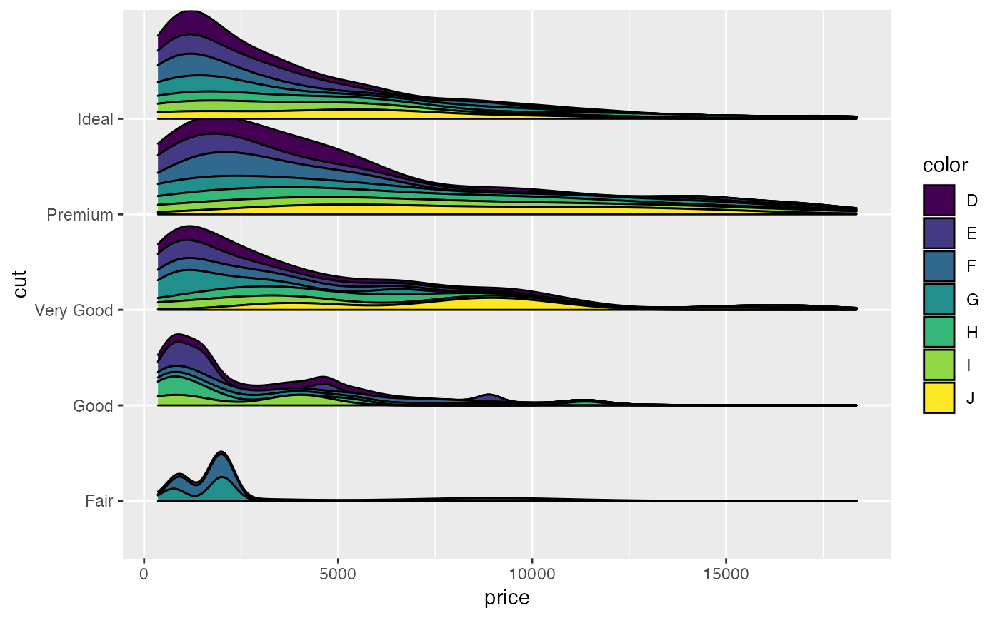
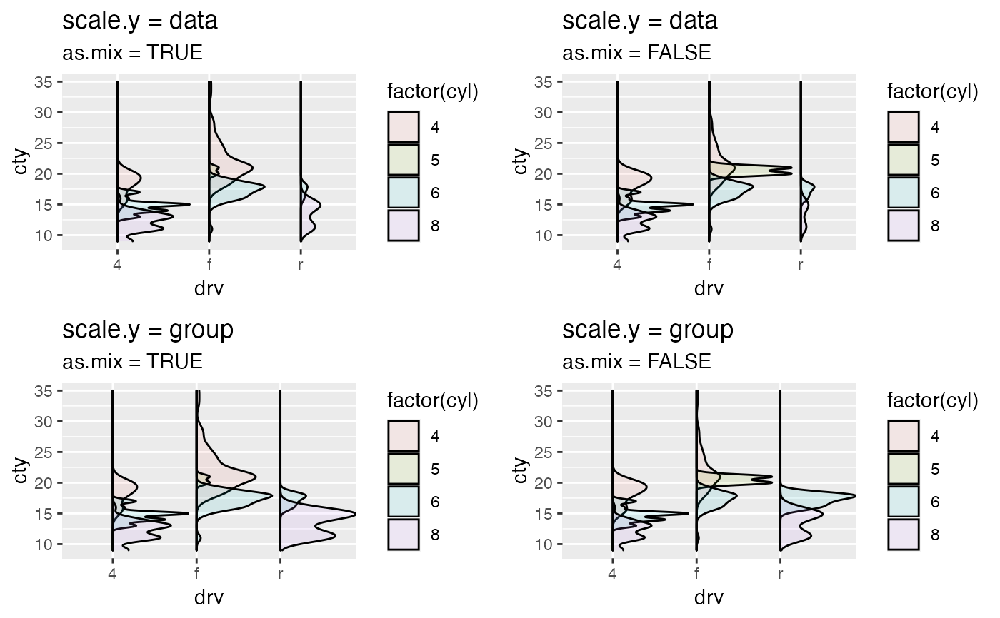

geom_density_.RdComputes and draws kernel density estimate.
Compared with geom_density(), it provides more general cases that
accepting x and y. See details
geom_density_( mapping = NULL, data = NULL, stat = "density_", position = "identity_", ..., scale.x = NULL, scale.y = c("data", "variable"), as.mix = FALSE, positive = TRUE, adjust = 0.9, na.rm = FALSE, orientation = NA, show.legend = NA, inherit.aes = TRUE ) stat_density_( mapping = NULL, data = NULL, geom = "density_", position = "stack_", ..., bw = "nrd0", adjust = 1, kernel = "gaussian", n = 512, trim = FALSE, na.rm = FALSE, orientation = NA, show.legend = NA, inherit.aes = TRUE )
| mapping | Set of aesthetic mappings created by |
||||||
|---|---|---|---|---|---|---|---|
| data | The data to be displayed in this layer. There are three options: If A A |
||||||
| stat | Use to override the default connection between
|
||||||
| position | Position adjustment, either as a string, or the result of a call to a position adjustment function. |
||||||
| ... | Other arguments passed on to |
||||||
| scale.x | A length 2 numerical vector. Scale the n coordinates of the points where the density is estimated. |
||||||
| scale.y | one of 'data', 'variable' to specify.
If the |
||||||
| as.mix | Logical. Under each variable, if |
||||||
| positive | If |
||||||
| adjust | adjust the proportional maximum height of the estimate (density, histogram, ...). |
||||||
| na.rm | If |
||||||
| orientation | The orientation of the layer. The default ( |
||||||
| show.legend | logical. Should this layer be included in the legends?
|
||||||
| inherit.aes | If |
||||||
| geom | Use to override the default connection between
|
||||||
| bw | The smoothing bandwidth to be used.
If numeric, the standard deviation of the smoothing kernel.
If character, a rule to choose the bandwidth, as listed in
|
||||||
| kernel | Kernel. See list of available kernels in |
||||||
| n | number of equally spaced points at which the density is to be
estimated, should be a power of two, see |
||||||
| trim | If |
The x (or y) is a group variable and y (or x) is the target variable to be plotted.
The result is a different density of y (x) for each value of x (y).
If only one of x or y is provided, it will be the target variable (no grouping) and
the standard geom_density() will be executed.
There are four combinations of scale.y and as.mix
scale.y = "variable" and as.mix = FALSEThe density estimates area of each group under the same variable is the same and scaled to maximum of 1.
scale.y = "variable" and as.mix = TRUEThe density estimates area of each group under the same variable is proportional to its own counts (over this variable).
scale.y = "data" and as.mix = FALSEThe sum of density estimates area of all group is scaled to maximum of 1. The sum of the density area for each variable is proportional to the its counts (over the whole dataset). Under each variable, the area of each group is the same.
scale.y = "data" and as.mix = TRUEThe sum of density estimates area of all group is scaled to maximum of 1 and the area of each group is proportional to its own count.
This geom treats each axis differently and, thus, can thus have two orientations. Often the orientation is easy to deduce from a combination of the given mappings and the types of positional scales in use. Thus, ggplot2 will by default try to guess which orientation the layer should have. Under rare circumstances, the orientation is ambiguous and guessing may fail. In that case the orientation can be specified directly using the orientation parameter, which can be either "x" or "y". The value gives the axis that the geom should run along, "x" being the default orientation you would expect for the geom.
geom_density, geom_hist_
if(require(dplyr)) { mpg %>% dplyr::filter(drv != "f") %>% ggplot(mapping = aes(x = drv, y = cty, fill = factor(cyl))) + geom_density_(alpha = 0.1) # only `x` or `y` is provided # that would be equivalent to call function `geom_density()` diamonds %>% dplyr::sample_n(500) %>% ggplot(mapping = aes(x = price)) + geom_density_() # density and boxplot # set the density estimate on the left mpg %>% dplyr::filter(drv != "f") %>% ggplot(mapping = aes(x = drv, y = cty, fill = factor(cyl))) + geom_density_(alpha = 0.1, scale.y = "data", positive = FALSE) + geom_boxplot() # x as density set.seed(12345) suppressWarnings( diamonds %>% dplyr::sample_n(500) %>% ggplot(mapping = aes(x = price, y = cut, fill = color)) + geom_density_(orientation = "x", adjust = 0.25, position = "stack_", scale.y = "variable") ) }#>#> #>#> #> #>#> #> #>#> Warning: Groups with fewer than two data points have been dropped.#> Warning: Groups with fewer than two data points have been dropped.#> Warning: Removed 2 rows containing missing values (position_stack).# settings of `scale.y` and `as.mix` # \donttest{ ggplots <- lapply(list( list(scale.y = "data", as.mix = TRUE), list(scale.y = "data", as.mix = FALSE), list(scale.y = "variable", as.mix = TRUE), list(scale.y = "variable", as.mix = FALSE) ), function(vars) { scale.y <- vars[["scale.y"]] as.mix <- vars[["as.mix"]] ggplot(mpg, mapping = aes(x = drv, y = cty, fill = factor(cyl))) + geom_density_(alpha = 0.1, scale.y = scale.y, as.mix = as.mix) + labs(title = paste("scale.y =", scale.y), subtitle = paste("as.mix =", as.mix)) }) suppressWarnings( gridExtra::grid.arrange(grobs = ggplots) )# }